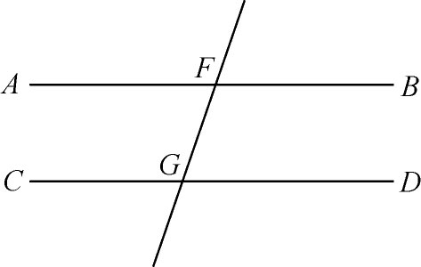
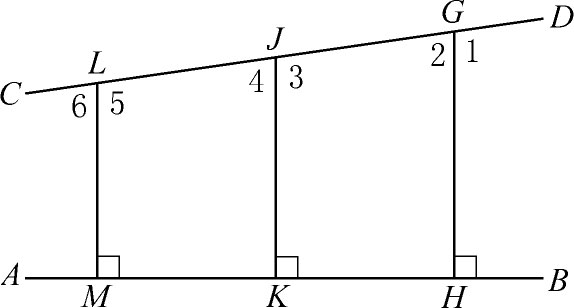
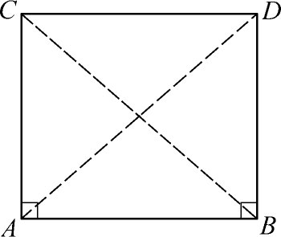
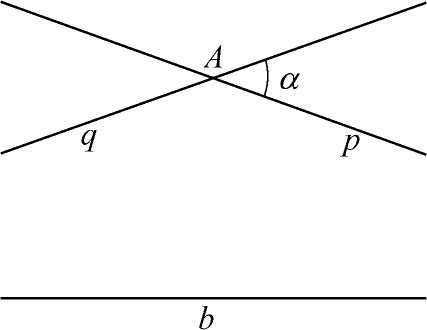

3．平行公理的研究
从公元前300年直到1800年间，人们虽始终坚信，欧几里得几何是物理空间的正确理想化，但是在那样长的几乎整个时期之内，数学家却始终对一件事耿耿于怀。欧几里得用的公理对于物理空间和对该空间的图形，都应看作是不证自明的真理，而按照欧几里得那样方式陈述的平行公理（第4章第3节）却被人认为有些过于复杂。虽说没有人怀疑它的真理性，却缺乏像其他公理那样的说服力，即使欧几里得自己，显然也不喜欢他对平行公理的那种说法，因为他只是在证完了无需用平行公理的所有定理之后才使用它。
关于在物质空间里是否可假定存在无限直线这个与此有关的问题，起初没有那么多人关心，但终于突出成为同样重要的问题。欧几里得只是小心地假设，可以按需要延长一条（有限）直线，因而甚至那延长后的直线也还是有限的。还有欧几里得叙述平行公理的特别措辞，说两条直线将在截线的同旁内角之和小于两直角的一侧相交，这是为了避免直接说出两条直线无论怎样延长都不相交的一种方式。然而欧几里得确实含有无限直线存在的思想，因为假若直线都是有限的，则在任何情况下它们也不能按需要任意延长，而且他证明了平行线的存在性。
非欧几里得几何的历史，开始于努力消除对欧几里得平行公理的怀疑。从希腊时代到1800年间有两种研究途径。一种是用更为自明的命题来代替平行公理，另一种是试图从欧几里得的其他九个公理推导出平行公理来。如果办到这一点，平行公理将成为定理，它也就无可怀疑了。我们将不给出这方面工作的细节，因为有关历史是容易查到的(2)。
第一个较大的尝试是托勒玫（Claudius Ptolemy，又译“托勒密”）在平行公设论文中给出的。他试图从欧几里得的其他九个公理以及与平行公理无关的欧几里得定理1到28，来证明平行公理。但托勒玫不自觉地假设了两直线不能包围整个空间，并且假定若AB和CD平行（图36.1），则对FG一侧内角成立的东西也必在另一侧同样成立。

图36.1
5世纪的评论家普罗克洛斯（Proclus）非常明显地反对平行公理。他说：“这个公理完全应从全部公理中剔除出去；因为它是一个包含许多困难的定理，托勒玫在一本书中致力于解决它，证明需要一些定义和一些定理。它的逆定理确实由欧几里得自己作为一个定理证明了。”普罗克洛斯指出，我们诚然必须相信当截线一侧的内角之和小于二直角时，两直线必在这侧逐渐相接近，但这两直线确实在有限点处相交还不是很清楚的。这个结论只是容或可能。他继续说，因为有一些曲线彼此逐渐接近但并不确实相交。例如双曲线逐渐接近它的渐近线但不相交，那么欧几里得公理的两直线难道不会出现这种情况吗？他于是说截线一侧两内角到达一定的和数，两直线可能一定相交，然而对于稍大一点儿而仍小于两直角的数值，两直线可能是渐近线。
普罗克洛斯他自己的平行公设证明，是基于亚里士多德（Aristotle）用于证明宇宙有限的公理。公理说：“如果从两直线成角的点出发无限延伸，则两直线间的相继距离［彼此向另一直线所作垂线］将最后超过任何有限的量。”普罗克洛斯的证明基本上是正确的，只是他把一个有问题的公理用另外一个来代替罢了。
纳西尔丁（Nasîr-Eddîn，1201—1274），欧几里得几何的波斯文编者，也同样给了一个欧几里得平行公设的“证明”，假定两条不平行直线在一个方向相互接近，在另一个方向相互远离。具体说，若AB与CD（图36.2）是两直线被GH，JK，LM，…所截，如果它们与AB垂直，且若角1，3，5，…是钝角而2，4，6，…是锐角，则GH＞JK＞LM＞…。纳西尔丁说，这个事实是显而易见的。

图36.2
沃利斯（John Wallis）在1663年也做了一些关于平行公理的工作，于1693年发表(3)。首先他重新发表了纳西尔丁关于平行公理的工作，这是牛津的一个阿拉伯语教授为他翻译的。顺便说一句，这是纳西尔丁的平行公理工作为什么为欧洲所知道的原因所在。沃利斯于是评论了纳西尔丁的证明，并提出他自己对欧几里得命题的证明。他的证明根据一个明显假设，假设对于任意一个三角形，存在一个三角形与原三角形相似，两三角形的边长之比等于任何已给值。沃利斯相信这个公理比起任意小的划分和任意大的扩充都要明显得多。他说，实际上以已给圆心和半径可作一圆的欧几里得公理，就是先假定有如我们意愿的任意大半径。于是恰好同样对直线形（如对一个三角形）可做类似的假设。
最简单的代替公理是在1769年由芬恩（Joseph Fenn）提出的，即两相交直线不能同时平行于第三条直线。这个公理也出现在普罗克洛斯对欧几里得《原本》第一卷命题31的注释中。芬恩的命题完全对等于在1795年普莱费尔（John Play-fair，1748—1819）给出的公理：通过不在直线l上的一给定点P，在P与l的平面上，只有一条直线不与l相交。这是近代书中引用的公理（为了简便常说有“一条且只有一条直线……”）。
勒让德在大约20年的时间内研究过平行公设问题。他的结果出现于一些书和一些文章中，包括《几何原理》（Eléments de géométrie）(4)的各次版本。在研究这问题的一项工作中，在存在不同大小的相似三角形这一假设下，他证明了平行公设；实际上他的证明是解析的，但他假设长度的单位无关系。于是他给出了一个证明，以如下假设为依据，即假设任意给定三个不共线的点，存在一个圆通过这三个点。他又在另一方法中，除去平行公设外用了其他所有公设，证明了三角形的内角之和不能大于两个直角。他于是指出在同样假设下，面积与亏值成正比，亏值是两直角减去三内角之和。所以他试作一三角形两倍于已给三角形的大小，使得大三角形的亏值将两倍于已给三角形的亏值。用这种方法进行，他希望得到亏值愈来愈大的一些三角形，那么内角之和要趋于零。他想这个结果必然荒谬，于是内角之和必然是180°。这个事实从而就蕴涵着欧几里得的平行公理。但是勒让德发现这套办法中最后需要证明：通过小于60°的角内任意一点，恒可画一直线与角的两边相交。而这件事不用平行公理是不能证明的。勒让德翻译的欧几里得《原本》第12次版本中（第12版，1813），每次都有附录，认为已给出了平行公设的证明，但每次都有缺点，因为总是隐含地假设一些不应该假设的东西，或者假设了一个和欧几里得公理同样有问题的公理。
勒让德在他的研究过程中(5)，应用除去平行公理以外的欧几里得公理，证明了以下的重要定理：若一个三角形的内角之和是两直角，则每个三角形都是如此。同样，若一个三角形的内角之和小于两直角，则每个三角形都是如此。于是他给出证明，若任何一个三角形的内角之和是两直角，则欧几里得平行公设成立。关于三角形内角之和的这个工作也是无结果的，因为勒让德未能证明（不用平行公理或相当的公理），一个三角形的内角之和不能小于两直角。
上述这些工作，主要是试图寻求更加不证自明的代替公理，以代替欧几里得的平行公理。许多提出的公理在直观上似乎确实更加不证自明一些。所以它们的创造者认为他们已经达到目标。然而进一步检查看出这些代替公理不是真正更能令人满意的。有些人作的论断，是关于发生在空间无限远之外的事。例如，要求作一圆通过不在一直线上的三点，当这三个点趋于共线时圆越来越大。另一方面，那些并不直接包含“无限远”的代替公理，例如，存在两个相似而不相等的三角形这样的公理，看来是更复杂的假设，并不比欧几里得的平行公理更好些。
解决平行公理的第二类尝试，探索从其他九条公理推导出欧几里得的论断。推导可用直接法或间接法。托勒玫曾试过直接证明。间接法是假设某些矛盾论断，以代替欧几里得的命题，并试着从一组新的相继定理里导出矛盾来。例如，因为欧几里得平行公理相当于这样的公理，即过不在直线l上的一点P有一条且仅有一条直线平行于l，所以对此公理有两样选择。一种是过P没有与l平行的直线，另一种是过P有多于一条直线与l平行。若取这两种选择的每一种以代替“一条平行线”公理，而可以证明新的一组将导致矛盾，那么这些选择就都必须排除，而“一条平行线”的论断即被证明。
这方面最重要的努力是萨凯里（Gerolamo Saccheri，1667—1733）进行的，他是一个耶稣会教士和帕维亚（Pavia）大学教授，他仔细研究了纳西尔丁与沃利斯的工作，然后采用他自己的进行方法。萨凯里从一个四边形ABCD开始（图36.3），其中A和B是直角，且AC＝BD。容易证明∠C＝∠D。现在欧几里得平行公理便相当于角C与D是直角这个论断，于是萨凯里考虑两种可能选择：
（1）钝角假设：∠C和∠D是钝角。
（2）锐角假设：∠C和∠D是锐角。
在第一个假设的基础上（并用其他九条欧几里得公理），萨凯里证明角C和D必须是直角。这样，在此假设下他导出了矛盾。

图36.3
萨凯里其次考虑了第二个假设并证明了许多有趣的定理。他继续进行直到得出以下的定理：已给任一点A与一直线b（图36.4），在锐角假设下，在过A的直线束（族）中，有两直线p与q，把直线束分成两部分。第一部分包含与b相交的那些直线，第二部分包含的那些直线（在α角里面）将在直线b上某处和b有共同垂线。直线p与q本身都渐近于b。从这个结果出发，经过冗长的一系列论证，萨凯里推导出p与b在无穷远的公共点处必将有一公垂线。虽则他没有得到任何矛盾，萨凯里却发现这个结论与其他结论是太不合情理了，于是他判定锐角假设必然是不真实的。

图36.4
这就只剩下图36.3中的角C与D是直角的假设了。萨凯里以前曾证明过，当C与D是直角时，任一三角形的内角之和都等于180°，并证明这个事实蕴涵着欧几里得平行公理。所以他感到有理由断言欧几里得的结论成立，因而他出版了他的书《欧几里得无懈可击》（Euclides ab Omni Naevo Vindicatus，1733）。然而因为萨凯里没有从锐角假设中得出矛盾，平行公理问题仍然没有结束。
寻求另一个可接受的公理以替代欧几里得公理，或者证明欧几里得断言必然是一个定理，做这种工作的人是如此之多，又是如此徒劳无功，使得1759年达朗贝尔（Jean Le Rond d'Alembert）把平行公理问题称之为“几何原理中的家丑”。